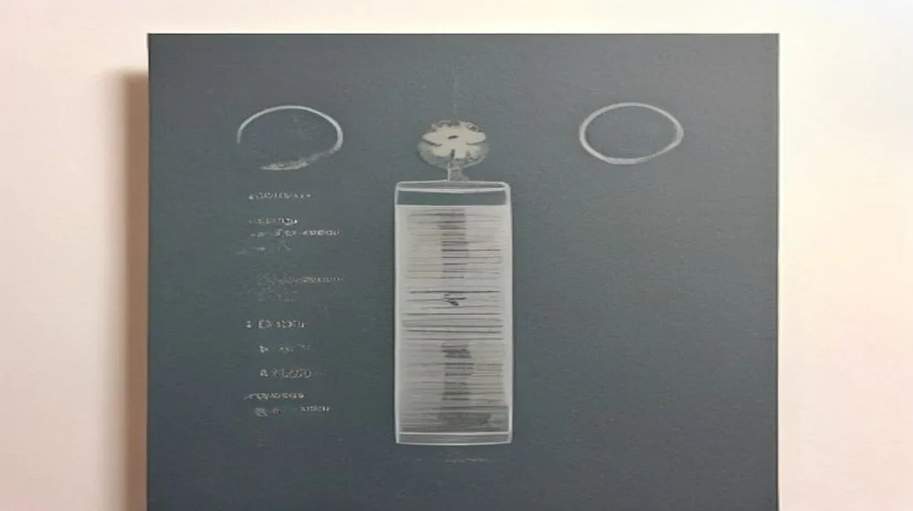

삼전, 대체 왜 난리일까? 숨겨진 투자 심리 미스터리 대분석!
사진: Marta Branco / Pexels (무료 이미지, 출처 표기)
혹시 '삼전'에 대해 들어보셨나요?

오늘 대한민국 인터넷을 뜨겁게 달구며 실시간 검색어 1위에 우뚝 선 이 세 글자, 평범해 보이던 이 단어가 수많은 이들의 희비와 운명을 좌우하는 거대한 파동의 중심에 서 있습니다. 과연 그 이면에는 어떤 거대한 투자 심리와 경제적 비밀이 숨겨져 있을까요? 지금부터 '삼전'이 대한민국을 들썩이게 한 진짜 이유를 파헤쳐 보겠습니다!
삼전, 그 이름이 가진 무게: 단순한 기업을 넘어선 의미
'삼전'이라는 세 글자. 단순히 '삼성전자'의 줄임말이라고 생각하신다면 오산입니다. 이 단어는 대한민국 경제의 심장이자 자부심, 그리고 수많은 개인 투자자들의 꿈과 희망이 담긴 상징 그 자체입니다. 한때 '국민주'라 불리며 온 국민의 사랑을 받았고, 실제로 대한민국의 경제 성장을 견인해 온 주역이었죠. 하지만 최근 몇 년간 '삼전'은 그 명성만큼이나 뜨거운 논쟁과 기대를 동시에 받아왔습니다. 오죽하면 '삼전 주식 하나쯤은 가지고 있어야 한다'는 말이 농담 반 진담 반으로 오가겠습니까?
갑작스러운 검색어 1위, 대체 무슨 일이?
어느 날 갑자기 '삼전'이 포털사이트 검색어 최상단에 올랐다면, 거기에는 분명 무언가 특별한 이유가 숨어있을 겁니다. 단순히 실적 발표나 뉴스 보도 때문이라고 단정하기엔 그 열기가 심상치 않습니다. 최근 반도체 업계는 AI 혁명의 거대한 물결 속에서 요동치고 있습니다. 특히 고대역폭 메모리(HBM)와 파운드리(반도체 위탁생산) 시장에서 삼성전자의 행보에 전 세계의 이목이 집중되고 있죠. 여기에 더해 미중 기술 패권 경쟁, 금리 인하 기대감 등 복합적인 요인들이 맞물리면서 '삼전'의 주가와 미래 가치에 대한 갑론을박이 최고조에 달한 것입니다. 사람들은 과연 '삼전'이 이 기회를 발판 삼아 다시 한번 날아오를 수 있을지, 아니면 거대한 벽에 부딪힐지에 대한 해답을 찾기 위해 촉각을 곤두세우고 있는 것이죠.
개미들의 희비 교차, 삼전에 얽힌 투자 심리 미스터리
대한민국 주식시장의 큰손은 바로 '개미'라 불리는 개인 투자자들입니다. 이들에게 '삼전'은 단순한 주식 종목을 넘어선 존재입니다. 어떤 이들에게는 은퇴 자금을 맡긴 희망의 상징이고, 또 다른 이들에게는 쓰디쓴 좌절을 안겨준 애증의 대상이기도 합니다. 특히 최근 몇 년간 동학개미운동을 통해 주식 시장에 뛰어든 수많은 개인 투자자들이 '삼전'에 집중 투자했습니다. 하지만 기대와는 달리 횡보하는 주가에 지쳐 떠나간 개미들도 많았죠. 그럼에도 불구하고 '삼전'이 다시금 검색어 1위에 오른 것은, 여전히 많은 개미 투자자들이 '삼전'에 대한 일말의 기대감과 궁금증을 놓지 못하고 있다는 방증일 것입니다. '과연 이번에는 다를까?' '진짜 저점에서 잡을 기회일까?' 수많은 질문들이 개미 투자자들의 마음속을 휘젓고 있습니다.
외인과 기관의 엇갈린 시선, 미래를 읽는 신호일까?
'삼전'을 둘러싼 또 하나의 미스터리는 바로 외국인과 기관 투자자들의 엇갈린 움직임입니다. 어떤 날은 외국인이 대량 매수를 통해 주가를 끌어올리는가 하면, 또 다른 날은 기관이 대규모 매도 물량을 쏟아내며 시장을 불안하게 만들기도 합니다. 이러한 이들의 움직임은 단순한 매매를 넘어, '삼전'의 미래 가치와 글로벌 경제 흐름에 대한 각자의 분석과 전략을 보여주는 바로미터라고 할 수 있습니다.
최근 '삼전' 주가를 둘러싼 주요 주체들의 움직임을 표로 정리해보았습니다.
과연 이들의 복잡한 셈법 속에서 '삼전'의 주가는 어느 방향으로 흘러갈까요? 이는 단순히 주식 시장의 문제를 넘어, 글로벌 경제의 향방을 예측하는 중요한 단서가 될 수 있습니다.
기술 패권 경쟁 속 삼전의 진짜 무기: 파운드리와 AI 반도체
'삼전'의 미래를 논할 때 빼놓을 수 없는 키워드는 바로 파운드리와 AI 반도체, 특히 HBM입니다. 인공지능 시대의 도래는 전 세계 반도체 시장의 판도를 송두리째 흔들고 있습니다. 엔비디아와 같은 AI 반도체 기업들의 폭발적인 성장은 '삼전'에게 새로운 기회이자 동시에 치열한 경쟁을 의미합니다. 삼성전자는 세계 1위 메모리 반도체 기술력을 바탕으로 HBM 시장에서 SK하이닉스와 주도권 경쟁을 벌이고 있으며, 동시에 대만 TSMC와 파운드리 시장의 패권을 다투고 있습니다. 이 거대한 기술 전쟁 속에서 '삼전'이 어떤 전략으로 승기를 잡을지가 대한민국의 미래 먹거리를 결정할 핵심 요소로 작용할 것입니다. 그야말로 한 치 앞도 내다볼 수 없는 숨 막히는 승부인 셈이죠!
삼전, 2024년 대한민국 경제의 나침반이 될까?
'삼전'이 단순한 한 기업을 넘어 대한민국 경제 전체의 나침반으로 불리는 데는 그만한 이유가 있습니다. 국내총생산(GDP)에서 차지하는 비중, 수출 실적, 그리고 수많은 협력업체와 고용 창출 효과까지, 삼성전자의 움직임은 곧 대한민국 경제의 활력과 직결되기 때문입니다. 2024년, 글로벌 경제의 불확실성이 여전한 가운데 '삼전'은 AI 혁명과 반도체 업황 회복이라는 두 마리 토끼를 잡으려 노력하고 있습니다. 과연 '삼전'은 이 거대한 파도 속에서 대한민국의 희망봉이 되어줄 수 있을까요? 아니면 또 다른 시험대에 오르게 될까요? '삼전'을 둘러싼 미스터리는 여전히 현재 진행형이며, 우리는 이 흥미진진한 스토리를 계속해서 지켜봐야 할 것입니다. 오늘 검색어 1위 '삼전'이 우리에게 던지는 질문은 비단 주식 투자에 국한되지 않습니다. 바로 대한민국 경제의 미래와 우리의 삶에 대한 깊은 통찰을 요구하고 있는지도 모릅니다.
🔗 이 글도 함께 보면 좋아요: 카카오뱅크, 대체 왜 지금 검색어 1위일까? 대한민국 금융을 뒤흔든 충격적 소식!
관련 추천 상품
이 포스팅은 쿠팡 파트너스 활동의 일환으로, 이에 따른 일정액의 수수료를 제공받습니다.